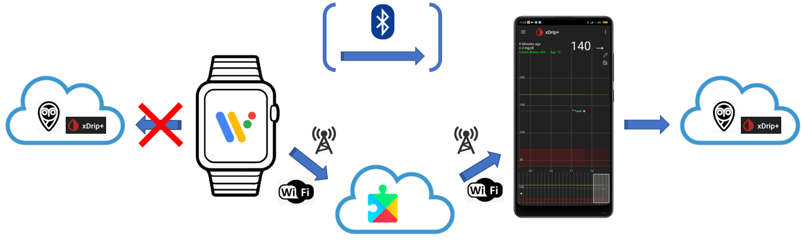

Android Wear
You will find the reference documentation here.
Android Wear extension in xDrip+⌁


Once you have installed xDrip+ on the watch paired with your phone, you can enable Wear.
xDrip+ will then communicate with a reduced version of itself on the watch.
For certain combinations of sensors and smartwatch, xDrip+ can be used directly from the watch itself without needing the phone presence. See below for more information.
Enable wear allows the watch to take over from the phone when the phone xDrip+ is losing connection to the sensor/bridge.
Force wear is forcing the watch to act as the main device connected to the sensor/bridge even if the phone is nearby (recommended).
Disable force on low battery will make the watch drop sensor/bridge connection to give it back to the phone when its battery level is too low.
Disable force on missed readings will make the watch drop sensor/bridge connection to give it back to the phone after a certain time of missed readings, defined in the menu below.
Only use wear can be enabled if you have setup the watch once but will not use your phone to connect to the sensor/bridge.
If you have several Android Wear smartwatch with xDrip+, you can select which one will be the collector. The other will only display xDrip+ data.
Switching watch
When switching between watches, xDrip+ might not be able to communicate its intention to both watches if one is switched off. If you want to change the collecting watch, force collector in xDrip+ and also force collector in the watch xDrip Prefs menu.
Sync wear logs is a very useful feature when troubleshooting: it will add the watch logs in xDrip+ events log with a prefix to identify the activity is on the watch. By default the prefix is wear but you can customize it. It is recommended to keep it enabled.
Show treatments add treatments symbols on the watch graph.
Standalone collector mode⌁
The xDrip+ wear extension also contains the part of xDrip+ that connects to some sensors, meaning you can make the watch act in lieu of the phone and take ownership of the communication and readings, without have your phone nearby.
This feature is not available for all sensors, see the table below:
| Sensor | Wear 1.x | Wear 2.x |
|---|---|---|
| G5 | Yes | Limited* |
| G6 | Yes | Limited* |
| Libre 1 with bridge | Yes | Yes |
| Libre 14 days US with bridge | Yes** | Yes** |
| Libre 2 EU without bridge | No | No |
| Libre 2 EU with bridge | Yes** | Yes** |
Limited*: There are some bugs present on most Android Wear smartwatches which prevent them working correctly with the G5/G6. In the best case scenario you will have a reading every 10 minutes. Some watches could be patched to achieve 5 minutes readings.
Yes**: You need to have a phone working with OOP1 or OOP2 and also need that same OOP app sideloaded to your watch. Some bridges might not be compatible.
Prerequisites⌁
The feature is available for sensor/watch combinations described above.
xDrip+ extension is installed on the watch with the same version than the one on your phone.
xDrip+ connectivity is good on your phone (meaning Bluetooth parameters are correctly defined).
xDrip+ on the watch must be authorized to access location.
Recommended sequence⌁
First time attempt or failure recovery:
- On your phone xDrip+: disable force collector, then disable collection, then disable Wear.
- Enable wear logs.
- Restart your smartwatch. Wait until it's fully running.
- On you phone enable only Wear.
- Wait until the xDrip+ graph is fully displayed on the watch (waiting for a new measurement doesn't hurt).
- Make sure you keep phone, watch and sensor close together and enable first collection then force collector.
- Pairing process will take typically 10 minutes, open the phone xDrip+ event logs and wait for events starting by
wear.

- If things went smooth you should now have the watch in standalone mode.
Sharing data in standalone mode⌁
If you want the watch to share data (xDrip+ Sync, Nightscout, ...) it needs to be connected to your phone and your phone needs to be connected to the internet.
This doesn't mean they need to be in the same place but the watch itself will not share data directly: it will send them to your phone, and it is your phone that will share. If the watch is connected to the internet through Wi-Fi or a SIM with a data plan, it will need to send them to your phone (connected to the internet also) and your phone itself will share the data. As long as they are both connected to the internet they don't need to be close one to the other.
